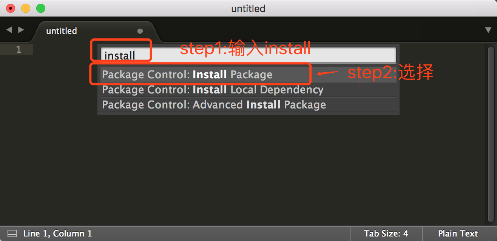

Sublime Text 特点
1、Sublime Text 是一款跨平台代码编辑器，在Linux、OS X和Windows下均可使用。
2、Sublime Text 是可扩展的，并包含大量实用插件，我们可以通过安装自己领域的插件来成倍提高工作效率。
3、Sublime Text 分别是命令行环境和图形界面环境下的最佳选择，同时使用两者会大大提高工作效率。
4、Sublime Text 为收费软件，建议有能力的人付费使用，以支持开发者。不过不购买也可以一直使用。
设置字体及字体大小
点菜单Preferences--->Settings(快捷键: ⌘, )
设置字体用"font_face":"字体名称"，设置字体大小用"font_size":字体大小，注意它们之间需要用逗号隔开。
安装插件
学习Sublime Text扩展插件的安装前，让我们来先了解一下它的插件官方网站
当我们在搜索框中输入插件的关键字，相关的插件就会在下面实时显示出来，我们就可以选择自己想要的插件进行了解。
1.安装Package Control
Package Control为插件管理包，所以我们首先要安装它。有了它，我们就可以很方便的浏览、安装和卸载Sublime Text中的插件。


2.ConvertToUTF8 插件安装
功能说明：ConvertToUTF8 能将除UTF8编码之外的其他编码文件在 Sublime Text 中转换成UTF8编码，在打开文件的时候一开始会显示乱码，然后一刹那就自动显示出正常的字体，当然，在保存文件之后原文件的编码格式不会改变。
安装方法一：快捷键
⌘⇧p，打开 “Command Palette” 悬浮对话框，在顶部输入 “install”, 然后下选点击 “Package Control:Install Package”。


安装完成